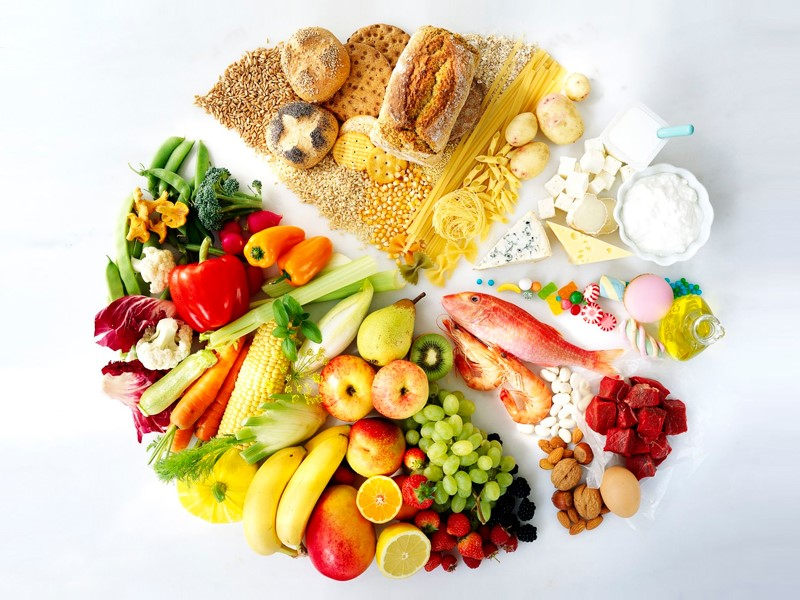

¿Qué es una dieta?
Una dieta es el conjunto de alimentos y bebidas que una persona consume diariamente. No significa dejar de comer, sino mantener una alimentación equilibrada y saludable.
Tipos de Dietas
🥗 Dieta Balanceada
Incluye todos los grupos alimenticios en cantidades adecuadas.
🥑 Dieta Vegetariana
Basada principalmente en alimentos de origen vegetal.
🍗 Dieta Alta en Proteínas
Enfocada en el consumo de proteínas para fortalecer músculos.
🥦 Dieta Baja en Grasas
Reduce el consumo de grasas saturadas y procesadas.


Beneficios de una Dieta Saludable
💪 Más energía
Mejora el rendimiento físico y mental.
❤️ Mejor salud
Reduce el riesgo de enfermedades.
⚖️ Peso saludable
Ayuda a mantener un peso adecuado.
